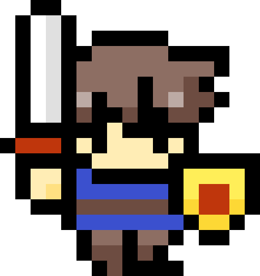

NINA GUIDE PRESENTS
特商法クエスト
ダンジョン入口知識 0 / 8


ダンジョンの入口勇者よ、ここには紹介活動で知っておきたい8つの試練が眠っている。宝箱に近づいて調べよう！
移動：矢印キー / WASD 調べる：Space
※本ゲームはニナガイドによる非公式の学習用コンテンツです。正解数は法令遵守を保証しません。会社の最新の概要書面・規約・公式案内を優先してください。
参考：ニナファームジャポン「特定商取引法」チラシ（2024年6月1日／Ver.1.9）。